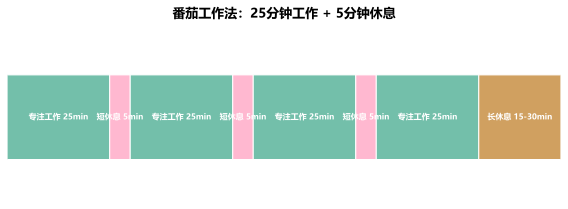

25分钟专注 + 5分钟休息，简单到不可能失败的专注力训练法
番茄工作法（Pomodoro Technique）由意大利人弗朗西斯科·西里洛（Francesco Cirillo）在20世纪80年代创立。他使用一个番茄形状的厨房计时器来管理自己的学习时间，由此得名。
这个方法的核心思想极其简单：
把大块的学习任务拆分成25分钟的小段，每段结束后休息5分钟，每4段后进行一次长休息（15-30分钟）。

大脑的注意力资源是有限的。科学研究表明，大多数人的持续专注时间在20-40分钟之间。超过这个范围，专注力会显著下降，学习效率也随之降低。
番茄工作法解决了两大问题：
核心原理：短期冲刺 + 及时恢复 = 可持续的高效学习
确定你要做的学习任务，拿一个计时器（手机计时器即可），设定25分钟。
开始计时，全神贯注于当前任务。如果有杂念或别人打扰，快速记下来，然后立即回到学习中。25分钟内不要做任何与学习无关的事。
计时器响了，立刻停止。休息5分钟——站起来走走、喝水、伸展身体。不要刷手机（屏幕会干扰休息效果）。
每完成4个番茄钟，进行一次15-30分钟的长休息。此时可以放松大脑，或处理之前记下的杂事。
建议每天开始时记录自己完成了多少个番茄钟，一周后你就能看到自己的专注时间总量。很多同学发现，知道自己在被记录，本身就能提高专注力。